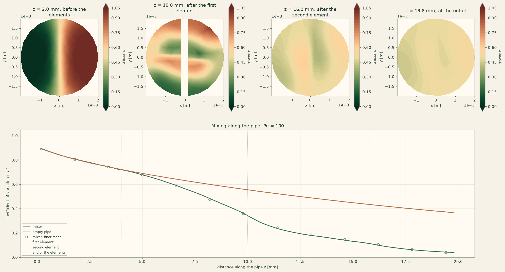
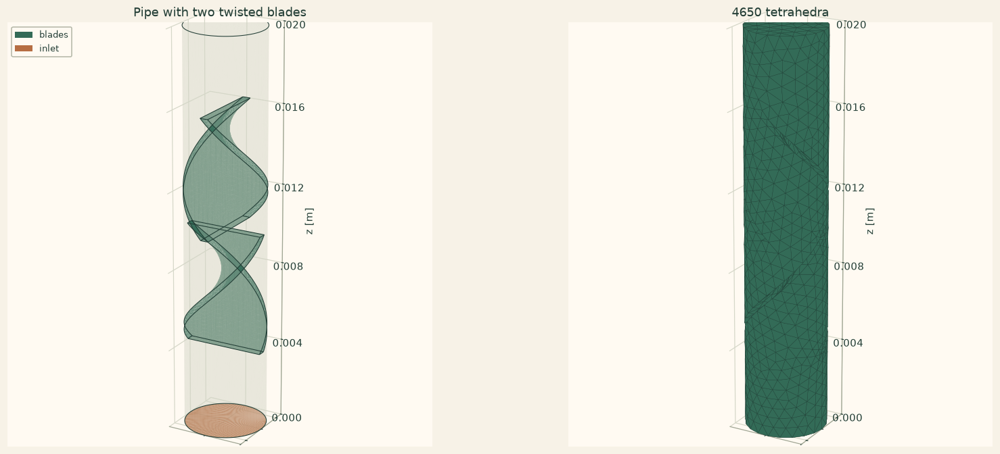

Docs › Examples › Laminar static mixer with twisted blades
Mixing · 3D
Laminar static mixer with twisted blades
Two twisted blades of the Kenics type in a pipe mix two liquids in creeping flow, compared with the same pipe without blades.
Run locally with OneSimulation. The example downloads are free. Running them requires an activated runtime. Runtime Alpha 0.2.1a7 · CPython 3.13 on macOS (Apple Silicon), Ubuntu 22.04 (x86-64), and Windows x64. Installation and activation · View pilot plans. Scope of the reference checks.


What it computes
The mixer and the empty pipe are read from STEP files and meshed with tetrahedra. OneSimulation solves the 3D creeping flow with Taylor-Hood elements and a tracer at Péclet number 100 in the computed flow with quadratic elements, and evaluates pressure drop and the coefficient of variation on cross-sections. The script that builds the STEP files comes with the notebook.
What it checks
The pressure drop of the two elements is 6.4 times that of an empty pipe of the same length (published range for Kenics elements about 5 to 7; 6.47 and 6.38 on two meshes); the empty pipe follows Hagen-Poiseuille within 0.7 %, water and tracer balances close within 1e-15 and 0.06 %, and the outlet coefficient of variation is 0.037 against 0.37 without blades.
Geometry
The notebook starts at the import of the CAD files kenics_static_mixer.step, kenics_static_mixer_empty.step: STEP (AP242), readable by any CAD program, with the names of the faces that the boundary conditions use. Put them next to the notebook.


The geometry script
The script kenics_static_mixer_geometry.py builds the geometry with the CAD objects of OneSimulation and writes the files. Change a dimension there, run it, and run the notebook again.
"""Geometry of the OneSimulation example "Laminar static mixer with twisted blades".
Builds a pipe of diameter 4 mm and length 20 mm with two mixing elements of the Kenics type with
the CAD objects of OneSimulation: blades 0.4 mm thick and 6 mm long, each twisted by 180 degrees,
the first to the right and the second to the left and turned by 90 degrees against the first. An
empty pipe of 4 mm stays before and after the elements. The fluid region is written to
kenics_static_mixer.step with the face groups inlet (z = 0) and outlet (z = 20 mm); all other faces
are walls (pipe wall and blades). The same pipe without blades is written to
kenics_static_mixer_empty.step for comparison.
"""
import numpy as np
from onesim.cad.d2 import Profile
from onesim.cad.d3 import Cylinder
mm = 1e-3
radius, thickness, element, length = 2 * mm, 0.4 * mm, 6 * mm, 20 * mm
blade = Profile.rectangle(
2.4 * radius, thickness, origin=(-1.2 * radius, -thickness / 2)
)
first = blade.twisted(element, np.pi).moved((0.0, 0.0, 4 * mm))
second = (
blade.twisted(element, -np.pi)
.rotated((0, 0, 1), np.pi / 2)
.moved((0.0, 0.0, 4 * mm + element))
)
pipe = Cylinder(radius=radius, length=length) - first - second
pipe = pipe.grouped(
inlet=pipe.select(faces=lambda face: abs(face.center[2]) < 1e-9),
outlet=pipe.select(faces=lambda face: abs(face.center[2] - length) < 1e-9),
)
pipe.save("kenics_static_mixer.step")
empty = Cylinder(radius=radius, length=length)
empty = empty.grouped(
inlet=empty.select(faces=lambda face: abs(face.center[2]) < 1e-9),
outlet=empty.select(faces=lambda face: abs(face.center[2] - length) < 1e-9),
)
empty.save("kenics_static_mixer_empty.step")The notebook
The complete notebook, cell by cell. Run it to produce the figures and the comparison printout.
Static (motionless) mixers are pipe inserts that mix viscous liquids in laminar flow. The Kenics design uses short blades twisted by 180°, alternately to the right and to the left, each turned by 90° against the previous one. Every blade splits the stream in two and turns each half, and the next one splits it again: the number of layers doubles with each element, and diffusion across the thinner and thinner layers completes the mixing. The price is a higher pressure drop than in the empty pipe.
The mixer comes from the CAD file kenics_static_mixer.step, a pipe of diameter \(D=4\) mm and length 20 mm with two elements 6 mm long and 0.4 mm thick; kenics_static_mixer_empty.step is the same pipe without blades. Both are written by kenics_static_mixer_geometry.py. A liquid of the viscosity of water flows at the mean speed \(\bar U=0.5\) mm/s (\(Re=2\)); half of the inflow carries a tracer. The tracer diffusivity is chosen for the Péclet number \(Pe=\bar UD/\mathcal D=100\).
| face | flow | tracer |
|---|---|---|
inlet | Poiseuille profile, mean speed \(\bar U\) | \(c=\tfrac12\left(1+\tanh(x/0.2\,\text{mm})\right)\) |
outlet | traction free | no diffusive flux |
| pipe wall and blades | no slip | no flux |
Reference. In the empty sections before the elements the pressure falls as in Hagen-Poiseuille flow, \(dp/dz=-8\mu\bar U/R^2\). The tracer and the liquid that enter must leave. The pressure drop of the elements relative to an empty pipe of the same length is of order 5 to 7 for Kenics elements in creeping flow (A. Thakur, C. Vial, K. D. P. Nigam, E. B. Nauman, G. Djelveh, "Static mixers in the process industries - a review", Chem. Eng. Res. Des. 81, 787-826, 2003).
import numpy as np
from onesim.cad.d2 import Plane
from onesim.cad.exchange import load
from onesim.materials import IsotropicSolid, NewtonianFluid
from onesim.meshing import TetrahedralMesher
from onesim.numerics import Numerics
from onesim.numerics.fem import FiniteElement, GalerkinAdvection, Lagrange, TaylorHood
from onesim.numerics.linear import SparseDirect
from onesim.numerics.nonlinear import Newton
from onesim.physics.heat_transfer import (
ConvectiveHeatTransfer,
FixedTemperature,
HeatFlux,
)
from onesim.physics.hydrodynamics import (
FixedVelocity,
FlowTraction,
IncompressibleNavierStokes,
NoSlipWall,
fully_developed_inflow,
)
from onesim.results.derived import derived_field
from onesim.results.sampling import field_function
from onesim.simulation import Problem, Simulation
from onesim.visualization import plots, theme
theme.set()Geometry and mesh
Tetrahedra of 0.6 mm in the mixer and the empty pipe; the mesh study adds 0.45 mm in the mixer.
mm = 1e-3
parts = {
"mixer": load("kenics_static_mixer.step"),
"empty pipe": load("kenics_static_mixer_empty.step"),
}
mixer = parts["mixer"]
radius, length = mixer.size[0] / 2, mixer.size[2]
cases = [("mixer", 0.6), ("mixer", 0.45), ("empty pipe", 0.6)]
meshes = {
(name, size): TetrahedralMesher(target_size=size * mm).generate(parts[name])
for name, size in cases
}
view = plots.Camera(elevation=20, azimuth=-60)
fig = plots.figure(1, 2, size=(15, 6))
plots.geometry(
mixer,
selection={
"blades": mixer.boundaries.all
- mixer.boundaries.inlet
- mixer.boundaries.outlet
- mixer.boundaries.outer_wall,
"inlet": mixer.boundaries.inlet,
},
labels=False,
camera=view,
title="Pipe with two twisted blades",
ax=fig[0],
)
plots.mesh(
meshes["mixer", 0.6],
groups=("all",),
legend=False,
camera=view,
title=f"{meshes['mixer', 0.6].cell_count} tetrahedra",
ax=fig[1],
)
plots.show()Flow
One flow problem per mesh; the Poiseuille inflow comes from fully_developed_inflow.
water, speed = NewtonianFluid(density=1000.0, dynamic_viscosity=1.0e-3), 0.5e-3
flows = {}
for name, size in cases:
part, mesh = parts[name], meshes[name, size]
faces = part.boundaries
walls = faces.all - faces.inlet - faces.outlet
model = IncompressibleNavierStokes(domain=part.volume, material=water)
problem = Problem(
name=f"Static mixer: flow, {name}",
geometry=part,
physics=(model,),
boundary_conditions=(
FixedVelocity(
boundary=faces.inlet,
physics=model,
value=fully_developed_inflow(
mesh, faces.inlet, mean_velocity=speed, no_slip=walls
),
),
FlowTraction(boundary=faces.outlet, physics=model, value=(0.0, 0.0, 0.0)),
NoSlipWall(boundary=walls, physics=model),
),
)
numerics = Numerics(
spatial=FiniteElement(element=TaylorHood()),
initial_guess={model.velocity: (0.0, 0.0, 0.0)},
nonlinear_solver=Newton(
linear_solver=SparseDirect(),
absolute_tolerance=1e-20,
relative_tolerance=1e-9,
),
)
solved = Simulation(
problem=problem, mesh=mesh, numerics=numerics
).solve_stationary()
flows[name, size] = solved.field(model.velocity), solved.field(model.pressure)Tracer
The tracer follows the same convection-diffusion equation as temperature, in the computed flow.
diffusivity = speed * 2 * radius / 100
tracer = IsotropicSolid(
density=1.0,
specific_heat_capacity=1.0,
thermal_conductivity=diffusivity,
youngs_modulus=1.0,
poisson_ratio=0.3,
thermal_expansion_coefficient=0.0,
)
tracers = {}
for name, size in cases:
part = parts[name]
transport = ConvectiveHeatTransfer(
domain=part.volume,
material=tracer,
velocity=field_function(flows[name, size][0]),
)
problem = Problem(
name=f"Static mixer: tracer, {name}",
geometry=part,
physics=(transport,),
boundary_conditions=(
FixedTemperature(
physics=transport,
boundary=part.boundaries.inlet,
value=lambda x: 0.5 * (1 + np.tanh(x / (0.2 * mm))),
),
HeatFlux(
physics=transport,
boundary=part.boundaries.all - part.boundaries.inlet,
value=0.0,
),
),
)
numerics = Numerics(
spatial=FiniteElement(
element=Lagrange(order=2), convection=GalerkinAdvection()
),
linear_solver=SparseDirect(),
)
tracers[name, size] = (
Simulation(problem=problem, mesh=meshes[name, size], numerics=numerics)
.solve_stationary()
.field(transport.temperature)
)Results
Pressures are averaged over cross-sections; the mixing quality is the flow-weighted coefficient of variation \(\sigma/\bar c\) of the tracer on cross-sections along the pipe, sampled at the points of each section that lie in the liquid at least 0.15 mm from a blade (contains).
r, angle = np.meshgrid(
np.linspace(0.05, 0.95, 12) * radius, np.linspace(0, 2 * np.pi, 36, endpoint=False)
)
disc = np.column_stack(((r * np.cos(angle)).ravel(), (r * np.sin(angle)).ravel()))
area_weight = r.ravel()
section = lambda z: np.column_stack((disc, np.full(len(disc), z)))
mean_pressure = lambda key, z: np.average(
np.ravel(flows[key][1].evaluate(section(z))), weights=area_weight
)
poiseuille = 8 * water.dynamic_viscosity * speed / radius**2
stations = np.linspace(0.2, 19.8, 50) * mm
margin = 0.15 * mm * np.array([[0, 0, 0], [1, 0, 0], [-1, 0, 0], [0, 1, 0], [0, -1, 0]])
variation = {}
for key, c in tracers.items():
inside = [
np.all([parts[key[0]].contains(section(z) + shift) for shift in margin], axis=0)
for z in stations
]
w = [
flows[key][0].evaluate(section(z)[keep])[:, 2] * area_weight[keep]
for z, keep in zip(stations, inside)
]
v = [np.ravel(c.evaluate(section(z)[keep])) for z, keep in zip(stations, inside)]
variation[key] = np.array(
[
np.sqrt(np.average((a - np.average(a, weights=b)) ** 2, weights=b))
/ np.average(a, weights=b)
for a, b in zip(v, w)
]
)
flux = (
lambda key, face, field: derived_field(
flows[key][0],
lambda u, points, c=field: np.ravel(c.evaluate(points)) * u[:, 2],
name="tracer_flux",
unit="1",
)
.integrate(boundary=face)
.value
)
print(
f"Reynolds number {water.density * speed * 2 * radius / water.dynamic_viscosity:.1f}, Péclet number {speed * 2 * radius / diffusivity:.0f}"
)
for key in cases:
faces = parts[key[0]].boundaries
gradient = (mean_pressure(key, 1 * mm) - mean_pressure(key, 3 * mm)) / (2 * mm)
drop = mean_pressure(key, 3 * mm) - mean_pressure(key, 17 * mm)
water_in, water_out = (
flows[key][0].integrate(boundary=faces.inlet, normal_component=True).value,
flows[key][0].integrate(boundary=faces.outlet, normal_component=True).value,
)
tracer_balance = (
flux(key, faces.outlet, tracers[key]) / flux(key, faces.inlet, tracers[key]) - 1
)
print(
f"{key[0]:10s} {meshes[key].cell_count:6d} tetrahedra: inlet gradient / Poiseuille {gradient / poiseuille:.4f}, "
f"pressure drop 3-17 mm {drop:.4e} Pa, water balance {(water_out + water_in) / water_out:+.1e}, tracer balance {tracer_balance:+.1e}, "
f"outlet variation {variation[key][-1]:.4f}"
)
elements = {
size: (
mean_pressure(("mixer", size), 3 * mm)
- mean_pressure(("mixer", size), 17 * mm)
- poiseuille * 2 * mm
)
/ (poiseuille * 12 * mm)
for size in (0.6, 0.45)
}
print(
"pressure drop of the two elements over an empty pipe of 12 mm: "
+ ", ".join(f"{z:.2f} (mesh {size} mm)" for size, z in elements.items())
+ "; published range for Kenics elements about 5 to 7"
)Figure
The tracer on cross-sections behind each element, and the coefficient of variation along the pipe with and without blades.
fig = plots.figure(
layout=[
["start", "first", "second", "end"],
["mixing", "mixing", "mixing", "mixing"],
],
size=(18, 10),
)
for panel, z, title in (
("start", 2.0, "before the elements"),
("first", 10.0, "after the first element"),
("second", 16.0, "after the second element"),
("end", 19.8, "at the outlet"),
):
plots.section(
tracers["mixer", 0.6],
plane=Plane(origin=(0, 0, z * mm), normal=(0, 0, 1)),
aspect=1.0,
limits=(0.0, 1.0),
subdivisions=2,
label="tracer c",
title=f"z = {z:.1f} mm, {title}",
ax=fig[panel],
)
plots.line(
stations / mm,
{"mixer": variation["mixer", 0.6], "empty pipe": variation["empty pipe", 0.6]},
points={"mixer, finer mesh": (stations[::4] / mm, variation["mixer", 0.45][::4])},
vlines={"first element": 4.0, "second element": 10.0, "end of the elements": 16.0},
ylimits=(0.0, 1.05),
xlabel="distance along the pipe z [mm]",
ylabel="coefficient of variation σ / c̄",
title="Mixing along the pipe, Pe = 100",
legend="lower left",
ax=fig["mixing"],
)
plots.show()Going further
Add elements in kenics_static_mixer_geometry.py and write the STEP file again: each element halves the layer thickness, and at higher Péclet numbers - more viscous liquids, larger molecules - more elements are needed. Raising the flow rate past \(Re\approx100\) adds secondary vortices that change both the mixing and the pressure drop.